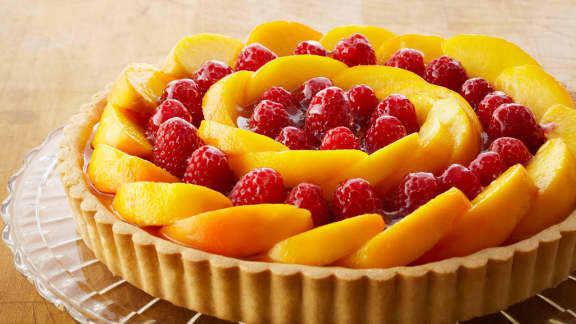

Ce qui me rend unique
A propos de mes
Autres Hobbies
:
Spécialités:
Conseillére en Développement Personnel Indépendante

Chef Patissiére Intermédiaire
Green Lover and Builder
Pour retourner à l'accueil, cliquez
ici
Vous pouvez aussi revisiter ces parties de mon site en cliquant au choix:
Ma Présentation
Mes Hobbies
Mes Formations
Autre Chose